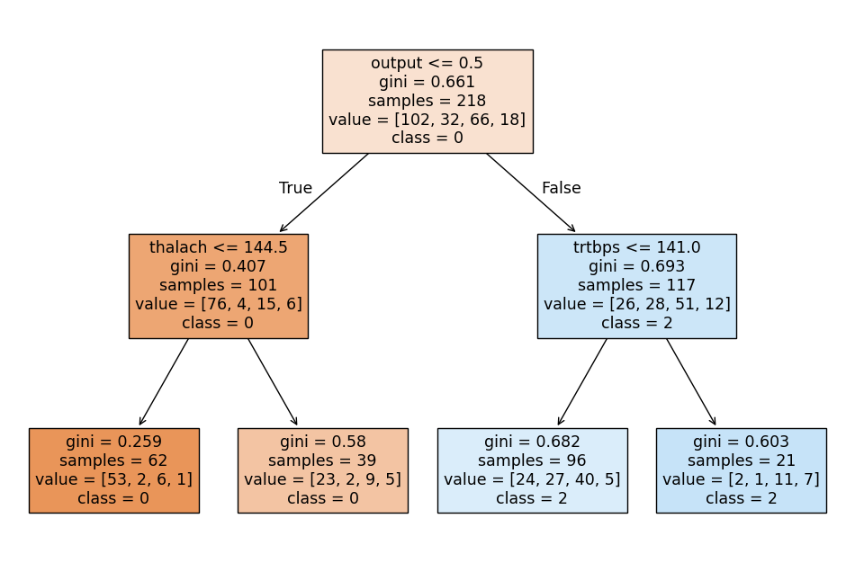

import pandas as pd
from sklearn.model_selection import train_test_split
from sklearn.neighbors import KNeighborsClassifier
from sklearn.tree import DecisionTreeClassifier, plot_tree
from sklearn.discriminant_analysis import LinearDiscriminantAnalysis
import matplotlib.pyplot as plt
from sklearn.linear_model import LogisticRegression
from sklearn.metrics import f1_score, roc_auc_scoreOur dataset consists of clinical data from patients who entered the hospital complaining of chest pain (“angina”) during exercise. The information collected includes:
age: Age of the patientsex: Sex of the patientcp: Chest Pain type- Value 0: asymptomatic
- Value 1: typical angina
- Value 2: atypical angina
- Value 3: non-anginal pain
trtbps: resting blood pressure (in mm Hg)chol: cholesterol in mg/dl fetched via BMI sensorrestecg: resting electrocardiographic results- Value 0: normal
- Value 1: having ST-T wave abnormality (T wave inversions and/or ST elevation or depression of > 0.05 mV)
- Value 2: showing probable or definite left ventricular hypertrophy by Estes’ criteria
thalach: maximum heart rate achieved during exerciseoutput: the doctor’s diagnosis of whether the patient is at risk for a heart attack- 0 = not at risk of heart attack
- 1 = at risk of heart attack
ha = pd.read_csv("https://www.dropbox.com/s/aohbr6yb9ifmc8w/heart_attack.csv?dl=1")
ha.head()| age | sex | cp | trtbps | chol | restecg | thalach | output | |
|---|---|---|---|---|---|---|---|---|
| 0 | 63 | 1 | 3 | 145 | 233 | 0 | 150 | 1 |
| 1 | 37 | 1 | 2 | 130 | 250 | 1 | 187 | 1 |
| 2 | 56 | 1 | 1 | 120 | 236 | 1 | 178 | 1 |
| 3 | 57 | 0 | 0 | 120 | 354 | 1 | 163 | 1 |
| 4 | 57 | 1 | 0 | 140 | 192 | 1 | 148 | 1 |
Q1: Natural Multiclass Models
Fit a multiclass KNN, Decision Tree, and LDA for the heart disease data; this time predicting the type of chest pain (categories 0 - 3) that a patient experiences. For the decision tree, plot the fitted tree, and interpret the first couple splits.
X = ha[['age', 'sex', 'trtbps', 'chol', 'restecg', 'thalach', 'output']]
y = ha['cp']
X_train, X_test, y_train, y_test = train_test_split(X, y, test_size=0.2, random_state=42)#KNN
knn = KNeighborsClassifier(n_neighbors=5)
knn.fit(X_train, y_train)KNeighborsClassifier()In a Jupyter environment, please rerun this cell to show the HTML representation or trust the notebook.
On GitHub, the HTML representation is unable to render, please try loading this page with nbviewer.org.
KNeighborsClassifier()
#Decision tree
tree = DecisionTreeClassifier(max_depth=2, random_state=42)
tree.fit(X_train, y_train)
plt.figure(figsize=(12, 8))
plot_tree(tree, feature_names=X.columns, class_names=['0', '1', '2', '3'], filled=True)
plt.show()
The first split in the tree is based on whether the output is greater than or equal to 0.5. There was 101 samples where that was true, and 117 where that was false.
#LDA
lda = LinearDiscriminantAnalysis()
lda.fit(X_train, y_train)LinearDiscriminantAnalysis()In a Jupyter environment, please rerun this cell to show the HTML representation or trust the notebook.
On GitHub, the HTML representation is unable to render, please try loading this page with nbviewer.org.
LinearDiscriminantAnalysis()
Q2: OvR
Create a new column in the ha dataset called cp_is_3, which is equal to 1 if the cp variable is equal to 3 and 0 otherwise.
Then, fit a Logistic Regression to predict this new target, and report the F1 Score.
Repeat for the other three cp categories. Which category was the OvR approach best at distinguishing?
ha['cp_is_3'] = (ha['cp'] == 3).astype(int)
ha.head()| age | sex | cp | trtbps | chol | restecg | thalach | output | cp_is_3 | cp_is_0 | cp_is_1 | cp_is_2 | |
|---|---|---|---|---|---|---|---|---|---|---|---|---|
| 0 | 63 | 1 | 3 | 145 | 233 | 0 | 150 | 1 | 1 | 0 | 0 | 0 |
| 1 | 37 | 1 | 2 | 130 | 250 | 1 | 187 | 1 | 0 | 0 | 0 | 1 |
| 2 | 56 | 1 | 1 | 120 | 236 | 1 | 178 | 1 | 0 | 0 | 1 | 0 |
| 3 | 57 | 0 | 0 | 120 | 354 | 1 | 163 | 1 | 0 | 1 | 0 | 0 |
| 4 | 57 | 1 | 0 | 140 | 192 | 1 | 148 | 1 | 0 | 1 | 0 | 0 |
X = ha[['age', 'sex', 'trtbps', 'chol', 'restecg', 'thalach', 'output']]
y = ha['cp_is_3']
X_train, X_test, y_train, y_test = train_test_split(X, y, test_size=0.2, random_state=42)
model = LogisticRegression(max_iter=1000, solver='lbfgs')
model.fit(X_train, y_train)
y_pred = model.predict(X_test)
f1 = f1_score(y_test, y_pred)
print(f"F1 Score for cp_is_3: {f1}")F1 Score for cp_is_3: 0.0ha['cp_is_0'] = (ha['cp'] == 0).astype(int)
X = ha[['age', 'sex', 'trtbps', 'chol', 'restecg', 'thalach', 'output']]
y = ha['cp_is_0']
X_train, X_test, y_train, y_test = train_test_split(X, y, test_size=0.2, random_state=42)
model = LogisticRegression(max_iter=1000, solver='lbfgs')
model.fit(X_train, y_train)
y_pred = model.predict(X_test)
f1 = f1_score(y_test, y_pred)
print(f"F1 Score for cp_is_0: {f1}")F1 Score for cp_is_0: 0.6792452830188679ha['cp_is_1'] = (ha['cp'] == 1).astype(int)
X = ha[['age', 'sex', 'trtbps', 'chol', 'restecg', 'thalach', 'output']]
y = ha['cp_is_1']
X_train, X_test, y_train, y_test = train_test_split(X, y, test_size=0.2, random_state=42)
model = LogisticRegression(max_iter=1000, solver='lbfgs')
model.fit(X_train, y_train)
y_pred = model.predict(X_test)
f1 = f1_score(y_test, y_pred)
print(f"F1 Score for cp_is_1: {f1}")F1 Score for cp_is_1: 0.0ha['cp_is_2'] = (ha['cp'] == 2).astype(int)
X = ha[['age', 'sex', 'trtbps', 'chol', 'restecg', 'thalach', 'output']]
y = ha['cp_is_2']
X_train, X_test, y_train, y_test = train_test_split(X, y, test_size=0.2, random_state=42)
model = LogisticRegression(max_iter=1000, solver='lbfgs')
model.fit(X_train, y_train)
y_pred = model.predict(X_test)
f1 = f1_score(y_test, y_pred)
print(f"F1 Score for cp_is_2: {f1}")F1 Score for cp_is_2: 0.11764705882352941The category where cp_is_0 had an F1 Score of 0.679 which is the highest among the four.
Q3: OvO
Reduce your dataset to only the 0 and 1 types of chest pain.
Then, fit a Logistic Regression to predict between the two groups, and report the ROC-AUC.
Repeat comparing category 0 to 2 and 3. Which pair was the OvO approach best at distinguishing?
#cp types 0 and 1
ha_01 = ha[ha['cp'].isin([0, 1])]
X = ha_01[['age', 'sex', 'trtbps', 'chol', 'restecg', 'thalach', 'output']]
y = (ha_01['cp'] == 1).astype(int) # Target: 1 if cp is 1, 0 otherwise
X_train, X_test, y_train, y_test = train_test_split(X, y, test_size=0.2, random_state=42)
model = LogisticRegression(max_iter=1000, solver='lbfgs')
model.fit(X_train, y_train)
y_pred_proba = model.predict_proba(X_test)[:, 1] # Probability of cp being 1
roc_auc = roc_auc_score(y_test, y_pred_proba)
print(f"ROC-AUC for cp types 0 vs 1: {roc_auc}")ROC-AUC for cp types 0 vs 1: 0.7572463768115942#cp types 0 and 2
ha_02 = ha[ha['cp'].isin([0, 2])]
X = ha_02[['age', 'sex', 'trtbps', 'chol', 'restecg', 'thalach', 'output']]
y = (ha_02['cp'] == 0).astype(int) # Target: 1 if cp is 0, 2 otherwise
X_train, X_test, y_train, y_test = train_test_split(X, y, test_size=0.2, random_state=42)
model = LogisticRegression(max_iter=1000, solver='lbfgs')
model.fit(X_train, y_train)
y_pred_proba = model.predict_proba(X_test)[:, 1] # Probability of cp being 1
roc_auc = roc_auc_score(y_test, y_pred_proba)
print(f"ROC-AUC for cp types 0 vs 2: {roc_auc}")ROC-AUC for cp types 0 vs 2: 0.8112244897959183#cp types 0 and 3
ha_03 = ha[ha['cp'].isin([0, 3])]
X = ha_03[['age', 'sex', 'trtbps', 'chol', 'restecg', 'thalach', 'output']]
y = (ha_03['cp'] == 0).astype(int) # Target: 1 if cp is 0, 3 otherwise
X_train, X_test, y_train, y_test = train_test_split(X, y, test_size=0.2, random_state=42)
model = LogisticRegression(max_iter=1000, solver='lbfgs')
model.fit(X_train, y_train)
y_pred_proba = model.predict_proba(X_test)[:, 1] # Probability of cp being 1
roc_auc = roc_auc_score(y_test, y_pred_proba)
print(f"ROC-AUC for cp types 0 vs 3: {roc_auc}")ROC-AUC for cp types 0 vs 3: 0.8571428571428572#cp types 1 and 2
ha_12 = ha[ha['cp'].isin([1, 2])]
X = ha_12[['age', 'sex', 'trtbps', 'chol', 'restecg', 'thalach', 'output']]
y = (ha_12['cp'] == 2).astype(int) # Target: 1 if cp is 2, 0 otherwise
X_train, X_test, y_train, y_test = train_test_split(X, y, test_size=0.2, random_state=42)
model = LogisticRegression(max_iter=1000, solver='lbfgs')
model.fit(X_train, y_train)
y_pred_proba = model.predict_proba(X_test)[:, 1]
roc_auc = roc_auc_score(y_test, y_pred_proba)
print(f"ROC-AUC for cp types 1 vs 2: {roc_auc}")ROC-AUC for cp types 1 vs 2: 0.6298701298701298#cp types 1 and 3
ha_13 = ha[ha['cp'].isin([1, 3])]
X = ha_13[['age', 'sex', 'trtbps', 'chol', 'restecg', 'thalach', 'output']]
y = (ha_13['cp'] == 3).astype(int) # Target: 1 if cp is 3, 0 otherwise
X_train, X_test, y_train, y_test = train_test_split(X, y, test_size=0.2, random_state=42)
model = LogisticRegression(max_iter=1000, solver='lbfgs')
model.fit(X_train, y_train)
y_pred_proba = model.predict_proba(X_test)[:, 1]
roc_auc = roc_auc_score(y_test, y_pred_proba)
print(f"ROC-AUC for cp types 1 vs 3: {roc_auc}")ROC-AUC for cp types 1 vs 3: 0.5750000000000001#cp types 2 and 3
ha_23 = ha[ha['cp'].isin([2, 3])]
X = ha_23[['age', 'sex', 'trtbps', 'chol', 'restecg', 'thalach', 'output']]
y = (ha_23['cp'] == 3).astype(int) # Target: 1 if cp is 3, 0 otherwise
X_train, X_test, y_train, y_test = train_test_split(X, y, test_size=0.2, random_state=42)
model = LogisticRegression(max_iter=1000, solver='lbfgs')
model.fit(X_train, y_train)
y_pred_proba = model.predict_proba(X_test)[:, 1]
roc_auc = roc_auc_score(y_test, y_pred_proba)
print(f"ROC-AUC for cp types 2 vs 3: {roc_auc}")ROC-AUC for cp types 2 vs 3: 0.6The pair of cp types 0 vs 3 was the best at distinguising as it has the highest ROC-AUC score of 0.85, which means its better at separating the two classes.